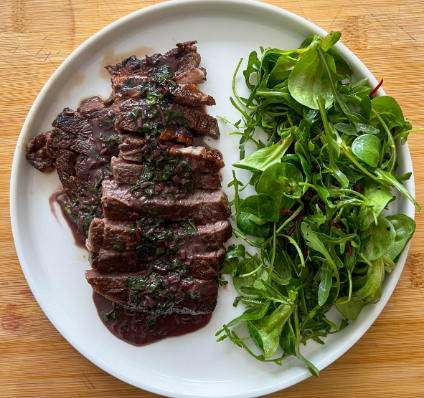

Steak with Red Wine Pan Sauce

Description
This is another article quoted word for word from Ethan Chlebowski's website because I admire his style of cooking and recipe writing.
What are you waiting for? Let's make one. It's a perfect weeknight meal.
Ingredients
- Steak
- Salt
- Oil for the pan
- 1-inch knob of Ginger
Shallot, minced
- 100 ml Red Wine
- 100 ml Chicken Stock
- 30 g Butter
- Cornstarch Slurry
- Minced Parsley
- Fresh Cracked Black Pepper
Steps
- Sprinkle salt over both sides of the steak. (Optional) Brine for at least 1 hour or up to overnight. Prep the shallot, parsley and gather all the ingredients needed for the pan sauce.
- Set a pan over medium-high heat and add a drizzle of oil, enough to coat the entire pan in a thin layer. Once hot, add the steak and cooked to the desired doneness, flipping as needed. I like medium or medium-rare, roughly 130-135 F internal at the thickest point. Remove the steak from the heat and let rest for 5 minutes while we prepare the pan sauce.
- Turn the heat to medium. Add the minced shallot and cook, while stirring, for 30 seconds. Pour in the red wine and bring to a rapid simmer. Reduce the red wine by about 1/2, roughly 2-3 minutes.
- Once the wine has been reduced, add the chicken stock and reduce it again by half. Turn the heat to low and add the butter. Stir and melt the butter so it emulsifies into a cohesive sauce. If you want the sauce thicker add a splash fo the cornstarch slurry with the heat on to thicken.
- Turn the heat off. Stir in the fresh cracked black pepper and minced parlsey . Taste it! Add salt or other flavorings as needed.
- Slice the rested steak and slather the sauce over top. Enjoy with dressed greens or roasted vegetables.